# Path Planning ## **Design of Autonomous Systems** ### csci 6907/4907-Section 86 ### Prof. **Sibin Mohan** --- car has following two options, 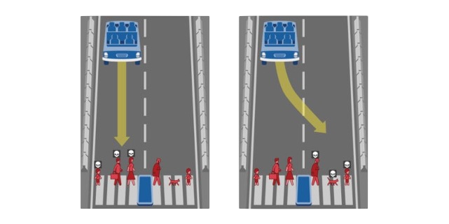 --- car has following two options, which path should the car choose? Note: Assume that the car **has** to choose one of the two paths. --- ## path planning --- ## path planning - determining **optimal trajectory** for autonomous vehicle --- ## path planning - determining **optimal trajectory** for autonomous vehicle - from current position to its **intended destination** --- ## path planning - determining **optimal trajectory** for autonomous vehicle - from current position to its **intended destination** - account for various factors - road conditions, traffic laws, obstacles, potential hazards, _etc._ --- ## path planning --- ## path planning - **decision-making** --- ## path planning - **decision-making** - **predictions** (**other** cars, pedestrians, traffic signals, _etc._) --- not just following a pre-determined path --- not just following a pre-determined path **real-time adjustments** → based on immediate surroundings --- any **routes** that are picked must be, --- any **routes** that are picked must be, - safe --- any **routes** that are picked must be, - safe - convenient --- any **routes** that are picked must be, - safe - convenient - economically beneficial --- consider this example: 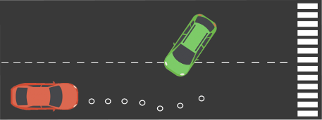 --- what should the **<span style="color:red">red</span>** car do? --- <div class="multicolumn"> <div> </div> <div> what should the **<span style="color:red">red</span>** car do? 1. stay in lane, speed up </div> </div> --- <div class="multicolumn"> <div> </div> <div> what should the **<span style="color:red">red</span>** car do? 1. stay in lane, speed up 2. stay in lane, slow down </div> </div> --- <div class="multicolumn"> <div> </div> <div> what should the **<span style="color:red">red</span>** car do? 1. stay in lane, speed up 2. stay in lane, slow down 3. stay in lane, constant speed </div> </div> --- <div class="multicolumn"> <div> <br> </div> <div> what should the **<span style="color:red">red</span>** car do? 1. stay in lane, speed up 2. stay in lane, slow down 3. stay in lane, constant speed 4. change lanes </div> </div> --- <div class="multicolumn"> <div> </div> <div> what should the **<span style="color:red">red</span>** car do? 1. stay in lane, speed up 2. stay in lane, slow down 3. stay in lane, constant speed 4. change lanes </div> </div> <br> <br> that **each scenario** → **probability** associated with it --- let's define a few terms... --- consider the following scenario: --- car has a destination or **goal** --- there are many possible **intermediate configurations**... --- there are many possible **intermediate configurations**... 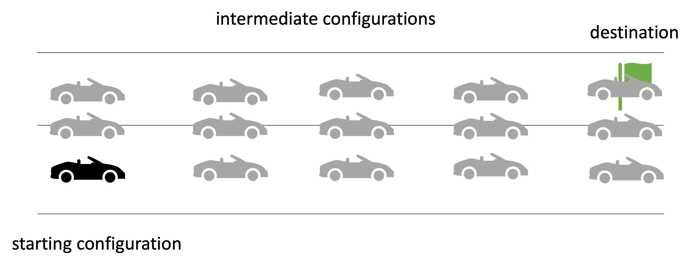 --- there are many possible **intermediate configurations**... ...between the starting configuration and final destination --- **objective** → to pick a **sequence of configurations** --- **objective** → to pick a **sequence of configurations** 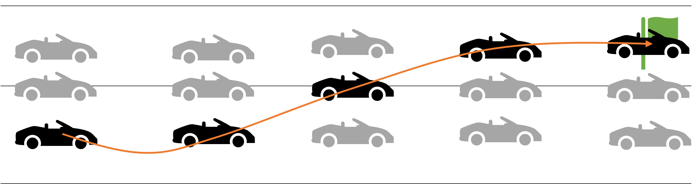 --- **objective** → to pick a **sequence of configurations** from starting point to destination --- **objective** → to pick a **sequence of configurations** from starting point to destination <br> this is known as → **<span style="background:orange">path</span>** --- a **path** is defined as, > continuous sequence of configurations → starting/ending with boundary configurations. --- **path planning** is then defined as, --- **path planning** is then defined as, > the process of finding a geometric path from initial to given config such that each configuration state is **feasible** --- **path planning** is then defined as, > the process of finding a geometric path from initial to given config such that each configuration state is **feasible** there is possibility of **alternate paths** --- **path planning** is then defined as, > the process of finding a geometric path from initial to given config such that each configuration state is **feasible** there is possibility of **alternate paths** for the same starting and ending configurations --- 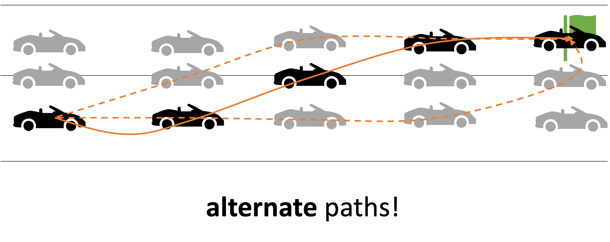 --- if another vehicle present --- if another vehicle present → car has to make some decisions 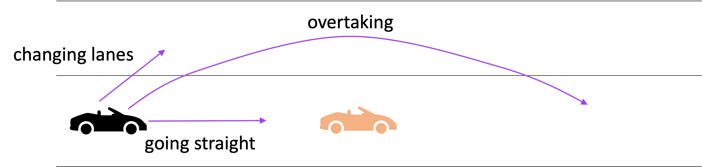 --- if another vehicle present → car has to make some decisions <div class="multicolumn"> <div> </div> <div> 1. continue going straight? 2. change lanes 3. _actively_ overtake? </div> </div> --- car has to execute a → **maneuver** --- car has to execute a → **maneuver** > a high-level characteristic of vehicle’s motion that encompasses position+speed of vehicle. --- so then **maneuver planning** is defined as, > taking best high-level decision for vehicle --- so then **maneuver planning** is defined as, > taking best high-level decision for vehicle <br> 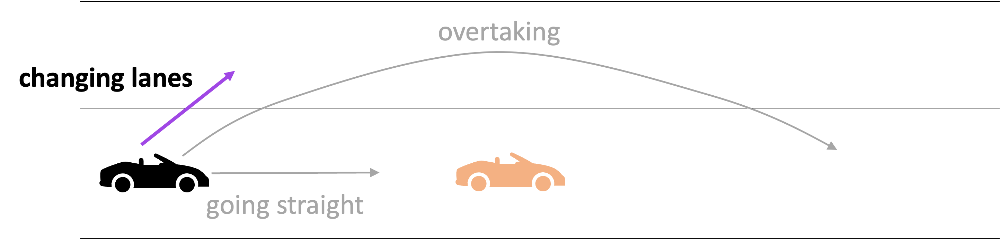 Note: - In this case it could mean just changing the lanes since our objective is to get to the final destination. --- note that **maneuver planning** has some subtlety, > taking best high-level decision for vehicle --- note that **maneuver planning** has some subtlety, > take best high-level decision for vehicle that accounts for path from planning algorithm --- > take best high-level decision for vehicle that accounts for path from planning algorithm 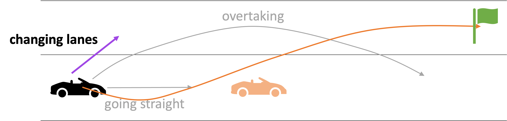 --- > take best high-level decision for vehicle that accounts for path from planning algorithm in this case, changing lane → moves us **towards final destination** --- a "path" → neither instantaneous not continuous --- a "path" → neither instantaneous not continuous car needs to go through → **sequence of discrete configurations** --- a "path" → neither instantaneous not continuous car needs to go through → **sequence of discrete configurations** 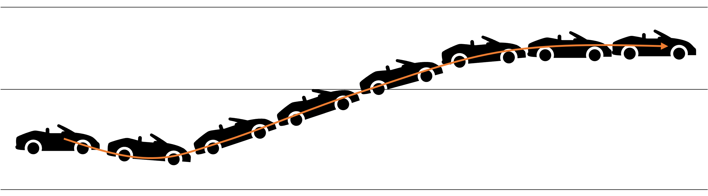 --- a "path" → neither instantaneous not continuous car needs to go through → **sequence of discrete configurations** **trajectory** --- **trajectory** > sequence of states visited by vehicle parameterized by → **time** and **velocity** --- finally we get to → **trajectory planning**, > **real-time planning** of vehicle’s move → from one feasible state to next --- finally we get to → **trajectory planning**, > **real-time planning** of vehicle’s move → from one feasible state to next 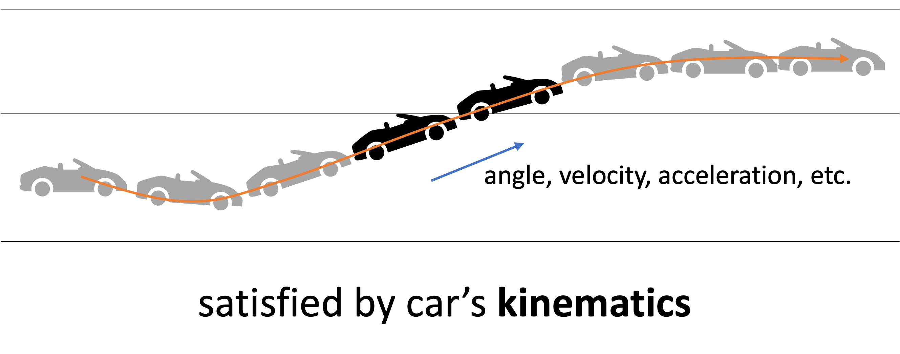 --- not break the laws of physics! --- ### summary of definitions | **term** | **definition** | **examples/notes** | |:---------|:---------------|:-------------------| | **path** | continuous sequence of configurations| starting/ending with boundary configurations | | **path planning** | find a geometric path from initial to given config | each configuration and state on path is feasible | | **maneuver** | high-level characteristic of vehicle’s motion | encompasses position and speed of vehicle on road <br> _e.g.,_ going straight, changing lanes, turning, overtaking | --- ### summary of definitions [contd.] | **term** | **definition** | **examples/notes** | |:---------|:---------------|:-------------------| | **maneuver planning** | take best high-level decision for vehicle | take into account path specified by planning algorithm | | **trajectory** | sequence of states visited by vehicle | parameterized by time and velocity| | **trajectory planning** | real-time planning of vehicle’s moves | from one feasible state to the next → satisfied by car’s kinematics| || --- core path planning components: - sensing - mapping - localization --- ## Path Planning | Approaches --- path planning involves → **predicting** environment around us --- path planning involves → **predicting** environment around us a **few seconds** into the **future** --- path planning involves → **predicting** environment around us - pedestrian will move (and direction) - traffic sign remains still --- [**three** types](https://www.sapien.io/blog/path-planning-for-self-driving-cars) of path planning: 1. global 2. local/partial 3. behavioral --- ### **Global** Path Planning --- ### **Global** Path Planning planning from start the destination → over a **long distance** --- ### **Global** Path Planning planning from start the destination → over a **long distance** - considers high-level road network constraints - _e.g._, available routes, traffic regulations, road conditions --- ### **Global** Path Planning planning from start the destination → over a **long distance** - considers high-level road network constraints - _e.g._, available routes, traffic regulations, road conditions - overall trajectory avoids major hazards and follows optimal paths - adhering to traffic laws - minimizing fuel consumption --- ### **Global** Path Planning planning from start the destination → over a **long distance** - considers high-level road network constraints - _e.g._, available routes, traffic regulations, road conditions - overall trajectory avoids major hazards and follows **optimal** paths - adhering to traffic laws - minimizing fuel consumption --- ### **Global** Path Planning compute an **efficient** route for long-distance travel --- ### **Global** Path Planning compute an **efficient** route for long-distance travel **adjusted by local planning** as needed --- ### **Local/partial** Path Planning --- ### **Local/partial** Path Planning **navigating** vehicle through → **immediate surroundings** --- ### **Local/partial** Path Planning **navigating** vehicle through → **immediate surroundings** - dealing with real-time adjustments - obstacle avoidance, managing intersections - other dynamic obstacles (_e.g.,_ pedestrians, cyclists, vehicles) --- ### **Local/partial** Path Planning **navigating** vehicle through → **immediate surroundings** - dealing with real-time adjustments - obstacle avoidance, managing intersections - other dynamic obstacles (_e.g.,_ pedestrians, cyclists, vehicles) - adjust vehicle trajectory to respond to changing conditions - ensure **smooth** and **safe** navigation --- ### **Local/partial** Path Planning vehicle → constantly re-evaluate its environment --- ### **Local/partial** Path Planning vehicle → constantly re-evaluate its environment algorithms → calculate **best local trajectory** at any given moment (based on sensor data) --- ### **Behavioral** Path Planning --- ### **Behavioral** Path Planning **anticipating and responding** to → behavior of other road users --- ### **Behavioral** Path Planning **anticipating and responding** to → behavior of other road users - simulate **human-like decision-making** - ensure **safe** interactions with pedestrians, cyclists, vehicles --- ### **Behavioral** Path Planning **anticipating and responding** to → behavior of other road users - simulate **human-like decision-making** - ensure **safe** interactions with pedestrians, cyclists, vehicles - **adjust its actions** - prevent collisions and ensure smooth traffic flow --- ### **Behavioral** Path Planning **anticipating and responding** to → behavior of other road users - simulate **human-like decision-making** - ensure **safe** interactions with pedestrians, cyclists, vehicles - **adjust** our actions - prevent collisions and ensure smooth traffic flow --- ### **Behavioral** Path Planning crucial role in **urban environments** (dense traffic) --- ### **Behavioral** Path Planning crucial role in **urban environments** (dense traffic) vehicles make **real-time decisions** to adapt to other drivers --- 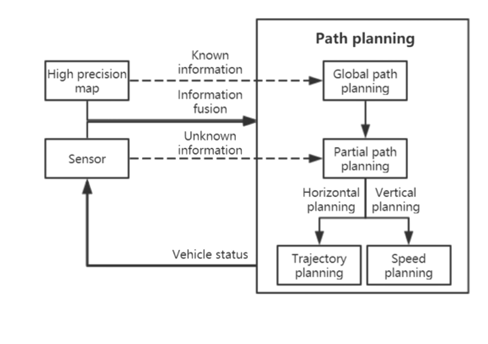 --- <div class="multicolumn"> <div> </div> <div> <br> <br> <br> - known+unknown information - in conjunction with SLAM </div> </div> --- <div class="multicolumn"> <div> </div> <div> <br> <br> <br> - known+unknown information - in conjunction with SLAM - **horizontal** → trajectory </div> </div> --- <div class="multicolumn"> <div> </div> <div> <br> <br> <br> - known+unknown information - in conjunction with SLAM - **horizontal** → trajectory - **vertical** → speed </div> </div> --- ### Predictions and Decision Making --- 1. **machine-learning** based --- 1. **machine-learning** based <br> 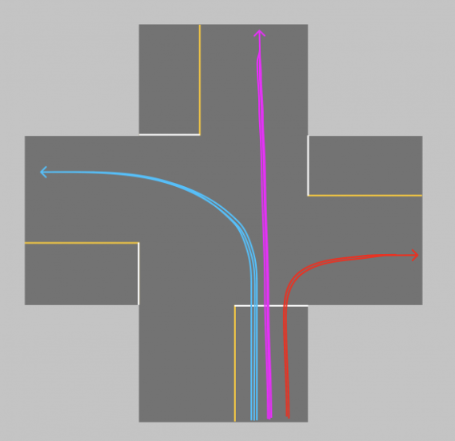 --- 1. **machine-learning** based <div class="multicolumn"> <div> </div> <div> <br> - **training** phase: - massive history of vehicles/paths - thousands of vehicles, actions at intersection </div> </div> --- 1. **machine-learning** based <div class="multicolumn"> <div> </div> <div> <br> - **training** phase: - massive history of vehicles/paths - thousands of vehicles, actions at intersection - **unsupervised** learning - clustering algorithms - each cluster a typical trajectory </div> </div> --- 1. **machine-learning** based more driving → more data and **better estimates** past behavior can affect current decisions --- 2. **model**-based --- 2. **model**-based **imagine possible choices** for vehicle 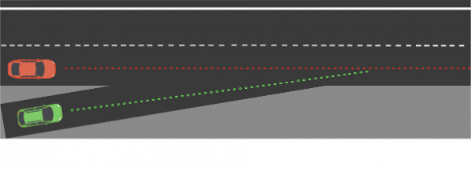 --- 2. **model**-based **imagine possible choices** for vehicle <div class="multicolumn"> <div> </div> <div> - red car can cause problems </div> </div> --- 2. **model**-based **imagine possible choices** for vehicle <div class="multicolumn"> <div> <br> <br> </div> <div> - red car can cause problems - four choices - speed up - slow down - constant speed - change lanes </div> </div> --- 2. **model**-based **imagine possible choices** for vehicle <div class="multicolumn"> <div> <br> <br> </div> <div> - red car can cause problems - four choices - speed up - slow down - constant speed - change lanes each has a **probability that changes with observations** </div> </div> --- 2. **model**-based <br> - implements feasibility of trajectory --- 2. **model**-based <br> - implements feasibility of trajectory - eliminates _impossible behaviors_ --- 2. **model**-based <br> - implements feasibility of trajectory - eliminates _impossible behaviors_ - focus on what’s possible, **not on past** (compare with ML-based approach) --- ### Decision Making --- once we have estimate of immediate future → we need a **decision** --- once we have estimate of immediate future → we need a **decision** - brake if obstacle detected? --- once we have estimate of immediate future → we need a **decision** - brake if obstacle detected? - accelerate or change lanes? --- depends on **environment** (_e.g.,_ highway vs parking lot) --- consider issues such as: - safety - feasibility - efficiency - legality - passenger comfort --- enter **finite state machines** --- to define a couple of things: ||| |----|----| | define **states** of a car | | --- to define a couple of things: ||| |----|----| | define **states** of a car | **cost functions** to define **choice** of state | --- to define a couple of things: ||| |----|----| | define **states** of a car | **cost functions** to define **choice** of state | | _e.g.,_ on highway, stationary, _etc._ | computed (independently) for each possible scenario| --- to define a couple of things: ||| |----|----| | define **states** of a car | **cost functions** to define **choice** of state | | _e.g.,_ on highway, stationary, _etc._ | computed (independently) for each possible scenario| | options → stay in lane, change to left lane, overtake a car|**lowest cost wins**| || --- how do we define this **cost**? --- cost calculated using various factors, --- cost calculated using various factors, _e.g.,_ feasibility, security, legal, comfort, speed, _etc_ --- 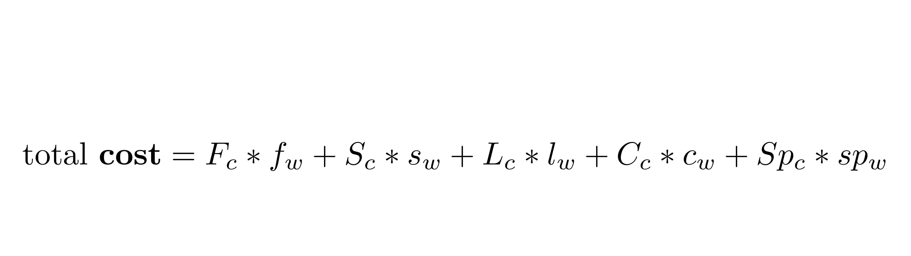 --- 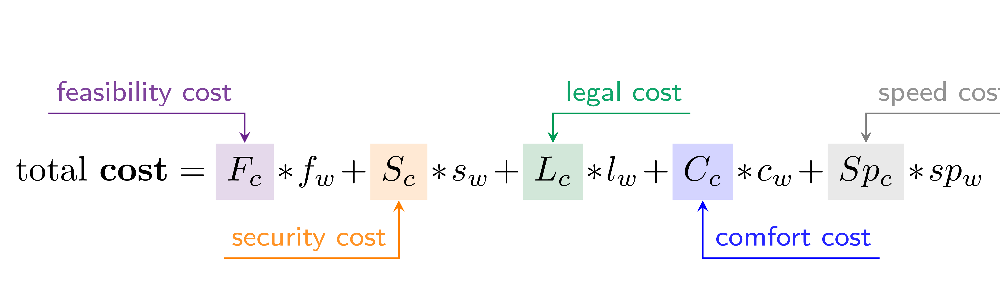 --- <img src="img/path/equations/pngs/equations-2.png"> --- each factor → defined using number or functions --- each factor → defined using number or functions _e.g.,_ the cost for speeding: 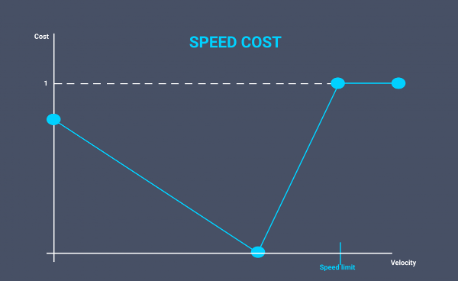 --- <img src="img/path/equations/pngs/equations-2.png"> "_weight_" for factors → define **importance** in cost calculations --- ## Path Planning | Setup --- main objective of path planning → **generate a trajectory** --- main objective of path planning → **generate a trajectory** a polynomial (curve) that pass through **waypoints** --- **[Frenet coordinate system](https://roboticsknowledgebase.com/wiki/planning/frenet-frame-planning)** --- **[Frenet coordinate system](https://roboticsknowledgebase.com/wiki/planning/frenet-frame-planning)** --- **[Frenet coordinate system](https://roboticsknowledgebase.com/wiki/planning/frenet-frame-planning)** 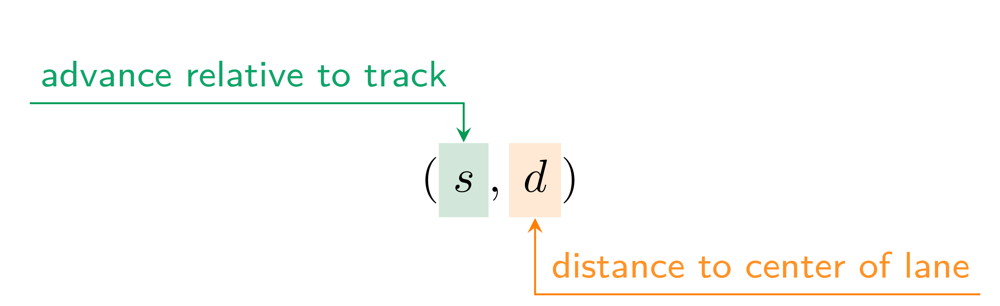 --- **[Frenet coordinate system](https://roboticsknowledgebase.com/wiki/planning/frenet-frame-planning)** <div class="multicolumn"> <div> <br> </div> <div> 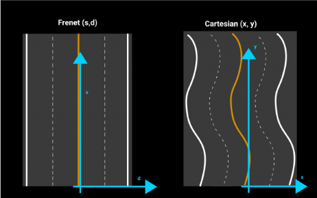 </div> </div> --- **Frenet coordinate system** - easier to use for trajectory and waypoint calculations --- **Frenet coordinate system** - easier to use for trajectory and waypoint calculations - **always relative** to the center of the lane --- **Frenet coordinate system** - easier to use for trajectory and waypoint calculations - **always relative** to the center of the lane - cartesian system would be harder changing geographies --- once decision has been made (_e.g.,_ overtake) --- once decision has been made (_e.g.,_ overtake) path planning algorithm → **generates multiple trajectories** --- path planning algorithm → **generates multiple trajectories** 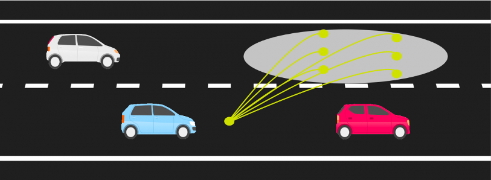 --- path planning algorithm → **generates multiple trajectories** **choose one** → based on criteria/costs established --- ### trajectory planning --- ### trajectory planning - **real-time** planning of actual vehicle’s transition --- ### trajectory planning - **real-time** planning of actual vehicle’s transition - from one feasible state to the next --- ### trajectory planning - **real-time** planning of actual vehicle’s transition - from one feasible state to the next - satisfying the vehicle’s _kinematic limits_ --- ### trajectory planning kinematic limits, - vehicle dynamics and - constrained by navigation comfort --- ### trajectory planning - respect lane boundaries and traffic rules --- ### trajectory planning - respect lane boundaries and traffic rules - avoiding **obstacles** - (other road users, ground conditions, ditches, _etc._) --- ### trajectory planning parameterized by, $$(time, acceleration, velocity)$$ --- ### trajectory planning during each "planning cycle", --- ### trajectory planning during each "planning cycle", - generate a number of trajectories → from vehicle’s current location --- ### trajectory planning during each "planning cycle", - generate a number of trajectories → from vehicle’s current location - with a look-ahead distance, - depending on speed and line-of-sight of vehicle’s sensors --- ### trajectory planning during each "planning cycle", - generate a number of trajectories → from vehicle’s current location - with a look-ahead distance, - depending on speed and line-of-sight of vehicle’s sensors - evaluating each trajectory w.r.t. some **cost function** --- ### trajectory planning during each "planning cycle", - generate a number of trajectories → from vehicle’s current location - with a look-ahead distance, - depending on speed and line-of-sight of vehicle’s sensors - evaluating each trajectory w.r.t. some **cost function** determine an **optimal trajectory** --- ### trajectory planning scheduled at regular intervals length of interval → depends on frequency of sensor --- ### trajectory planning 1. trajectory generated on a low resolution/dimensional search space --- ### trajectory planning 1. trajectory generated on a low resolution/dimensional search space 2. optimal trajectory "smoothed out" on high resolution/dimension --- challenges for finding paths is → **how to represent search space?** --- environment → query for paths, optimal or otherwise --- physical environment → transformed into **state space** --- physical environment → transformed into **state space** ### graphs --- ### graphs **discretizes** search space → for easier computations --- ### Graphs Used for Path Planning --- ### Graphs Used for Path Planning most methods → start with bare representation (lanes, road boundaries) --- ### Graphs Used for Path Planning most methods → start with bare representation (lanes, road boundaries) convert into **higher-order graphical representations** --- let's look at some popular graphical representations used in path planning --- 1. **[Voronoi diagrams](https://ics.uci.edu/~goodrich/teach/geom/notes/Voronoi1.pdf)** (aka Dirichlet Tessellation) 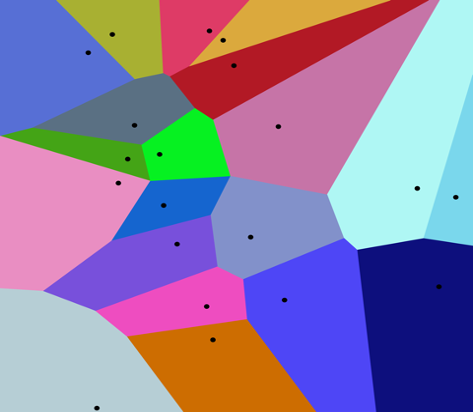 --- 1. **[Voronoi diagrams](https://ics.uci.edu/~goodrich/teach/geom/notes/Voronoi1.pdf)** <br> <br> <div class="multicolumn"> <div> </div> <div> - partitions plane with $n$ points → convex polygons </div> </div> --- 1. **[Voronoi diagrams](https://ics.uci.edu/~goodrich/teach/geom/notes/Voronoi1.pdf)** <br> <br> <div class="multicolumn"> <div> </div> <div> - partitions plane with $n$ points → convex polygons - each polygon → **exactly one** generating point </div> </div> --- 1. **[Voronoi diagrams](https://ics.uci.edu/~goodrich/teach/geom/notes/Voronoi1.pdf)** <br> <br> <div class="multicolumn"> <div> </div> <div> - partitions plane with $n$ points → convex polygons - each polygon → **exactly one** generating point - every point in given polygon → closer to its generating point than to any other </div> </div> --- 1. **Voronoi diagrams** - these objects are just finitely many points in the plane - called seeds, sites, or generators --- 1. **Voronoi diagrams** - these objects are just finitely many points in the plane - called seeds, sites, or generators - for each seed → corresponding region, called a Voronoi cell - all points of plane closer to that seed than to any other --- <!-- .slide: data-background="white" --> 1. **Voronoi diagrams** <br> 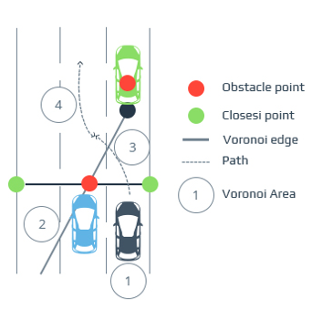 --- <!-- .slide: data-background="white" --> 1. **Voronoi diagrams** <div class="multicolumn"> <div> </div> <div> <br> <br> <br> generates paths → **maximize distance** between vehicle and surrounding obstacles </div> </div> --- <!-- .slide: data-background="white" --> 1. **Voronoi diagrams** <div class="multicolumn"> <div> </div> <div> <br> <br> <br> generates paths → **maximize distance** between vehicle and surrounding obstacles </div> </div> typically used for planning in **static environments** --- <!-- .slide: data-background="white" --> 2. **[occupancy grids](https://www.mathworks.com/help/robotics/ug/occupancy-grids.html)** <br> 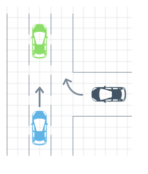 --- <!-- .slide: data-background="white" --> 2. **occupancy grids** <br> <div class="multicolumn"> <div> </div> <div> <br> <br> <br> - similar to Voronoi diagrams - discretize state space → **grid** </div> </div> --- <!-- .slide: data-background="white" --> 2. **occupancy grids** <br> <div class="multicolumn"> <div> </div> <div> <br> each cell - probability of cell being occupied by obstacle - or a cost proportional to the feasibility or risk of traversal. </div> </div> --- 2. **occupancy grids** <br> risk/feasibility → presence of obstacles, lane/road boundaries --- 2. **occupancy grids** <br> <br> |pros|| |:-------|:------| |low computational power| | || --- 2. **occupancy grids** <br> <br> |pros|cons| |:-------|:------| |low computational power| cannot handle **non-linear dynamics** or obstacles| || --- <!-- .slide: data-background="white" --> 3. **[state lattices](https://www.cs.cmu.edu/~alonzo/pubs/papers/isairas05Planning.pdf)** <br> 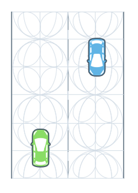 --- <!-- .slide: data-background="white" --> 3. **state lattices** <br> <div class="multicolumn"> <div> </div> <div> <br> <br> - _generalization_ of grids - repetition of rectangles/squares - **discretize a continuous space** </div> </div> --- 3. **state lattices** <br> <br> - constructed by regularly repeating primitive paths --- 3. **state lattices** <br> <br> - constructed by regularly repeating primitive paths - that connect possible states for vehicle in terms of, - position, - curvature or - time --- 3. **state lattices** <br> <br> reduces to → "[boundary value problem](https://www.sciencedirect.com/science/article/pii/S0968090X15003447?via%3Dihub#b0420)" Note: - A BVP involves finding a solution to a differential equation that satisfies conditions (called boundary conditions) at the "boundaries" or endpoints of the independent variable's domain --- 3. **state lattices** <br> <br> reduces to → "[boundary value problem](https://www.sciencedirect.com/science/article/pii/S0968090X15003447?via%3Dihub#b0420)" connecting original state → required final state --- 3. **state lattices** <br> <br> - overcomes limitations of grid-based techniques --- 3. **state lattices** <br> <br> - overcomes limitations of grid-based techniques - without increasing computational requirements --- <!-- .slide: data-background="white" --> 4. **[driving corridors](https://ai.stanford.edu/~ddolgov/papers/dolgov_gpp_stair08.pdf)** <br> 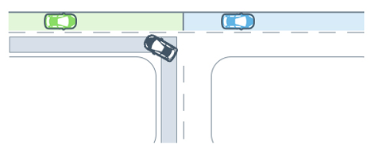 --- <!-- .slide: data-background="white" --> 4. **driving corridors** <br> <br> <div class="multicolumn"> <div> </div> <div> - similar to [air corridors](https://pmc.ncbi.nlm.nih.gov/articles/PMC8624552/) </div> </div> --- <!-- .slide: data-background="white" --> 4. **driving corridors** <br> <br> <div class="multicolumn"> <div> </div> <div> - similar to [air corridors](https://pmc.ncbi.nlm.nih.gov/articles/PMC8624552/) - **continuous** collision-free space </div> </div> --- <!-- .slide: data-background="white" --> 4. **driving corridors** <br> <br> <div class="multicolumn"> <div> </div> <div> - similar to [air corridors](https://pmc.ncbi.nlm.nih.gov/articles/PMC8624552/) - **continuous** collision-free space - bounded by road/lane boundaries and obstacles </div> </div> --- 4. **driving corridors** based on lane boundary information given by, --- 4. **driving corridors** based on lane boundary information given by, - **detailed digital maps** or - map built using SLAM --- lane boundaries --- lane boundaries - outer bound of driving corridors --- lane boundaries - outer bound of driving corridors - restricted in the presence of obstacles --- a driving corridor is constructed for **each car** --- 4. **driving corridors** major drawback → intensive computational power --- 4. **driving corridors** major drawback → intensive computational power - for planning for entire range of coordinates - road network, representation of roads/lanes/vehicles Note: - This could prove to be prohibitive. --- ## Path Planning | Algorithms --- so far we have defined, - a coordinate system - problem definition and setup and - representation of the state space --- but how to **find paths** (rather, trajectories)? --- **three** well-known classes of algorithms --- **three** well-known classes of algorithms 1. traditional/**physics**-based → _e.g.,_ [artificial potential field (APF)](#artificial-potential-field-apf) 2. **graph**-based → _e.g.,_ [A* and D*](#a-and-d-search) 3. **heuristic random traversal**, _e.g.,_ [RRT](#rapidly-exploring-random-tree-rrt-algorithm) --- ### Artificial Potential Field (APF) --- **[potential field](https://en.wikipedia.org/wiki/Scalar_potential)** --- **potential field** <br> difference in **potential energies** of object → in two different positions --- **potential field** difference in **potential energies** of object → in two different positions - **depends only on the positions** --- **potential field** difference in **potential energies** of object → in two different positions - **depends only on the positions** - not on path taken by object --- **potential field** difference in **potential energies** of object → in two different positions - **depends only on the positions** - not on path taken by object _e.g.,_ potential energy due to **gravity**, magnetic/electric fields --- ### Artificial Potential Field (APF) "artificial" potential field → capture motion of robot in certain space --- ### Artificial Potential Field (APF) consider a space, --- ### Artificial Potential Field (APF) consider a space, - divided into a grid of cells --- ### Artificial Potential Field (APF) consider a space, - divided into a grid of cells - with **obstacles** and a **goal node** --- ### Artificial Potential Field (APF) <div class="multicolumn"> <div> <br> <br> consider a space, - divided into a grid of cells - with **obstacles** and a **goal node** </div> <div> 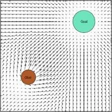 </div> </div> --- ### Artificial Potential Field (APF) <div class="multicolumn"> <div> </div> <div> <br> <br> - assign **artificial potential field** </div> </div> --- ### Artificial Potential Field (APF) <div class="multicolumn"> <div> </div> <div> <br> <br> - assign **artificial potential field** - to every point in grid </div> </div> --- ### Artificial Potential Field (APF) <div class="multicolumn"> <div> </div> <div> <br> <br> - assign **artificial potential field** - to every point in grid - using "potential field functions" </div> </div> --- - robot simulates → from highest potential to lowest potential --- - robot simulates → from highest potential to lowest potential - goal node → **lowest potential** --- - robot simulates → from highest potential to lowest potential - goal node → **lowest potential** - starting node → **maximum potential** autonomous vehicle → moves from lowest to highest potential --- <!-- .slide: data-background="white" --> one [example](https://cerv.aut.ac.nz/wp-content/uploads/2021/12/A-Survey-of-Path-Planning-Algorithms-for-Autonomous-Vehicles.pdf) of potential field functions: 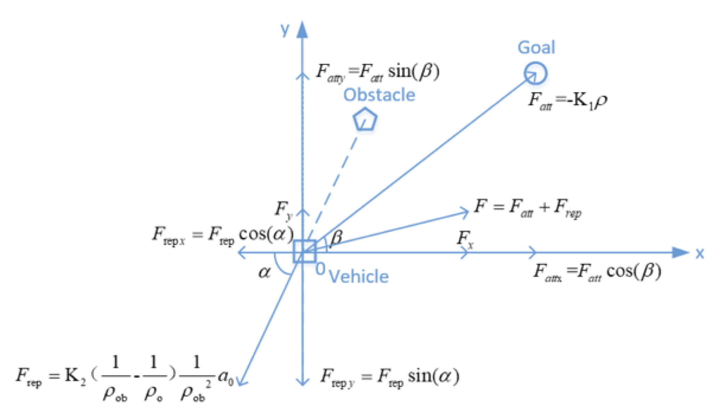 --- in 3D space → [finding a path](https://medium.com/@rymshasiddiqui/path-planning-using-potential-field-algorithm-a30ad12bdb08) through, --- in 3D space → [finding a path](https://medium.com/@rymshasiddiqui/path-planning-using-potential-field-algorithm-a30ad12bdb08) through, - a set of obstacles → producing **repulsive fields** --- in 3D space → [finding a path](https://medium.com/@rymshasiddiqui/path-planning-using-potential-field-algorithm-a30ad12bdb08) through, - a set of obstacles → producing **repulsive fields** - while heading towards the goal → exhibiting **attractive fields** --- <!-- .slide: data-background="white" --> in 3D space → [finding a path](https://medium.com/@rymshasiddiqui/path-planning-using-potential-field-algorithm-a30ad12bdb08) through, 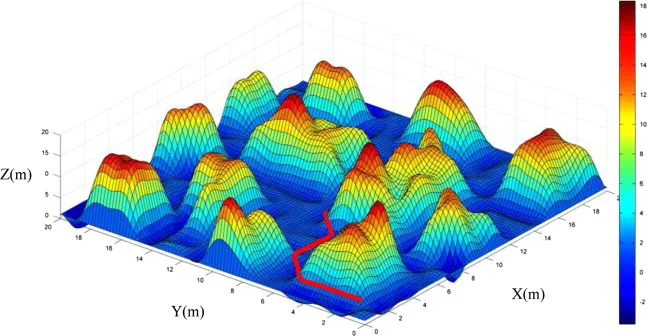 --- ### A* and D* Search --- graph search algorithms --- graph search algorithms - **decompose map** into interconnected and non-coincident grids --- graph search algorithms - **decompose map** into interconnected and non-coincident grids - search for **optimal path** → starting grid to target grid --- graph search algorithms - **decompose map** into interconnected and non-coincident grids - search for **optimal path** → starting grid to target grid - avoid collisions --- ### [**A\* algorithm**](https://www.datacamp.com/tutorial/a-star-algorithm) --- ### **A\* algorithm** informed search algorithm → leverages **heuristic function**. --- **heuristic function** estimates → **cost** of reaching the goal from given node --- **heuristic function** estimates → **cost** of reaching the goal from given node - **prioritize promising paths** and --- **heuristic function** estimates → **cost** of reaching the goal from given node - **prioritize promising paths** and - **avoid exploring unnecessary ones** --- <!-- .slide: data-background="white" --> ### **A\* algorithm** <img src="img/path/Astarpathfinding.gif" width="1000"> --- ### **A\* algorithm** combines Dijkstra and **best first search** algorithms Note: - Best-first search is a heuristic-based search algorithm that prioritizes expanding nodes that appear closest to the goal, using a heuristic function to estimate the cost of reaching the goal from a given node. --- ### **A\* algorithm** combines Dijkstra and **best first search** algorithms obtain **optimal** path through → establishing two lists --- ### **A\* algorithm** combines Dijkstra and **best first search** algorithms obtain **optimal** path through → establishing two lists |open list | closed list| |:---------|:-----------| --- ### **A\* algorithm** combines Dijkstra and **best first search** algorithms obtain **optimal** path through → establishing two lists |open list | closed list| |:---------|:-----------| |grid points for selection | | || --- ### **A\* algorithm** combines Dijkstra and **best first search** algorithms obtain **optimal** path through → establishing two lists |open list | closed list| |:---------|:-----------| |grid points for selection | already selected points | || --- ### **A\* algorithm** --- ### **A\* algorithm** - starting grid number → open list --- ### **A\* algorithm** - starting grid number → open list - put adjacent grids → open list --- ### **A\* algorithm** - starting grid number → open list - put adjacent grids → open list - evaluation function, $f(n)$, applied to → adjacent grid in open list --- ### **A\* algorithm** - starting grid number → open list - put adjacent grids → open list - evaluation function, $f(n)$, applied to → adjacent grid in open list - starting point → moved to closed list --- ### **A\* algorithm** - starting grid number → open list - put adjacent grids → open list - evaluation function, $f(n)$, applied to → adjacent grid in open list - starting point → moved to closed list - set grid point with smallest value → new starting point --- ### **A\* algorithm** - starting grid number → open list - put adjacent grids → open list - evaluation function, $f(n)$, applied to → adjacent grid in open list - starting point → moved to closed list - set grid point with smallest value → new starting point - loop until → target point raster in open list --- ### **A\* algorithm** - starting grid number → open list - put adjacent grids → open list - evaluation function, $f(n)$, applied to → adjacent grid in open list - starting point → moved to closed list - set grid point with smallest value → new starting point - loop until → target point raster in open list final step → **connect** points in closed list for optimal path --- - **evaluation** function, $f(n)$, applied to → adjacent grid in open list --- evaluation function, $$ f(n) = g(n) + h(n) $$ --- evaluation function, $$ f(n) = g(n) + h(n) $$ |||| |--------|:-----|:----| | $g(n$) | actual cost | starting point → current point | --- evaluation function, $$ f(n) = g(n) + h(n) $$ |||| |--------|:-----|:----| | $g(n$) | actual cost | starting point → current point | | $h(n$) | **heuristic function** <br> estimated cost | current point → target point | || --- estimated cost function, $h(x)$, --- estimated cost function, $h(x)$, - usually expressed using Euclidean distance --- estimated cost function, $h(x)$, - usually expressed using Euclidean distance - change of cost function → **improves the performance** --- <!-- .slide: data-background="white" --> visual example of how A* works: <img src="img/path/a_star.avif" width="1300" border="1"> --- <!-- .slide: data-background="white" --> A* with an **[obstacle](https://en.wikipedia.org/wiki/A*_search_algorithm#)** <img src="img/path/Astar_progress_animation.gif" height="800"> Note: - The empty circles represent the nodes in the open set, i.e., those that remain to be explored, and the filled ones are in the closed set. Color on each closed node indicates the distance from the goal: the greener, the closer. One can first see the A* moving in a straight line in the direction of the goal, then when hitting the obstacle, it explores alternative routes through the nodes from the open set. --- A* [pseudocode](https://www.datacamp.com/tutorial/a-star-algorithm) ```[1|2-4|6-10|11|12-14|16-18|20-22|24-27|29-30|32-33|34-35|37-41|43|44-48] function A_Star(start, goal): // Initialize open and closed lists openList = [start] // Nodes to be evaluated closedList = [] // Nodes already evaluated // Initialize node properties start.g = 0 // Cost from start to start is 0 start.h = heuristic(start, goal) // Estimate to goal start.f = start.g + start.h // Total estimated cost start.parent = null // For path reconstruction while openList is not empty: // Get node with lowest f value - implement using a priority queue // for faster retrieval of the best node current = node in openList with lowest f value // Check if we've reached the goal if current = goal: return reconstruct_path(current) // Move current node from open to closed list remove current from openList add current to closedList // Check all neighboring nodes for each neighbor of current: if neighbor in closedList: continue // Skip already evaluated nodes // Calculate tentative g score tentative_g = current.g + distance(current, neighbor) if neighbor not in openList: add neighbor to openList else if tentative_g >= neighbor.g: continue // This path is not better // This path is the best so far neighbor.parent = current neighbor.g = tentative_g neighbor.h = heuristic(neighbor, goal) neighbor.f = neighbor.g + neighbor.h return failure // No path exists function reconstruct_path(current): path = [] while current is not null: add current to beginning of path current = current.parent ``` --- ### **A\* algorithm** **guaranteed** to terminate and is complete → always find a solution --- ### **A\* algorithm** **guaranteed** to terminate and is complete → always find a solution _i.e.,_ a path from start to goal → if one exists --- ### **A\* algorithm** **guaranteed** to terminate and is complete → always find a solution _i.e.,_ a path from start to goal → if one exists --- only for _finite_ graphs...look up what happens for _infinite_ graphs --- **limitations of A\* algorithm** --- **limitations of A\* algorithm** | **issue** | **description** | |:-----------|:----------------| | **complex environments** | struggles in large search spaces where heuristic provides inaccurate estimates <br> result → **longer computation times** | --- **limitations of A\* algorithm** | **issue** | **description** | |:-----------|:----------------| | **complex environments** | struggles in large search spaces where heuristic provides inaccurate estimates <br> result → **longer computation times** | | **high memory usage** | lists can consume **significant memory** | --- **limitations of A\* algorithm** [contd.] | **issue** | **description** | |:-----------|:----------------| | **heuristic dependence** | relies on **heuristic quality** <br> poor choices → inefficient pathfinding | --- **limitations of A\* algorithm** [contd.] | **issue** | **description** | |:-----------|:----------------| | **heuristic dependence** | the algorithm’s effectiveness relies on the quality of the heuristic; a poor choice can lead to inefficient pathfinding | | **limited real-time responsiveness** | may not respond quickly enough in **highly dynamic environments** → where obstacles frequently change <br> reevaluating paths takes time| || --- ### [**Dynamic A\* (D\*) Algorithm**](https://ieeexplore.ieee.org/document/351061) --- ### D* Algorithm planning paths in **unknown, partially known and changing environments** --- ### D* Algorithm planning paths in **unknown, partially known and changing environments** efficient, optimal and complete manner --- ### D* Algorithm **continue using original path** → after crossing the obstacle --- ### D* Algorithm **continue using original path** → after crossing the obstacle improves efficiency of path planning --- ### D* Algorithm specifically designed for dynamic environments --- ### D* Algorithm specifically designed for dynamic environments - where obstacles may appear or disappear during navigation --- ### D* Algorithm specifically designed for dynamic environments - where obstacles may appear or disappear during navigation - effective for robotic applications requiring **real-time adaptability** --- ### D* Algorithm specifically designed for dynamic environments - where obstacles may appear or disappear during navigation - effective for robotic applications requiring **real-time adaptability** - as robot receives new information about its surroundings --- updating paths efficiently **without recalculating** from scratch timely responses to changes --- [textbook has links](https://autonomy-course.github.io/textbook/autonomy-textbook.html#path-planning-algorithms) about D* and its variants --- ### Rapidly-exploring Random Tree (RRT) Algorithm --- ### RRT Algorithm - use the starting point as root node --- ### RRT Algorithm - use the starting point as root node - grow the **tree randomly** in the feasible space --- ### RRT Algorithm - use the starting point as root node - grow the **tree randomly** in the feasible space - until it touches the end point (leaves) --- ### RRT Algorithm **collision-free path** → from starting point to ending point --- ### RRT Algorithm to explore search space, --- ### RRT Algorithm to explore search space, - **random sampling** (using randomly generated points) and --- ### RRT Algorithm to explore search space, - **random sampling** (using randomly generated points) and - rapid expansion to explore the search space --- ### RRT Algorithm to explore search space, - **random sampling** (using randomly generated points) and - rapid expansion to explore the search space - **gradually approaching** the target point --- ### RRT Algorithm to explore search space, - **random sampling** (using randomly generated points) and - rapid expansion to explore the search space - **gradually approaching** the target point - iteration and connection → finds a **feasible path** --- <!-- .slide: data-background="white" --> ### RRT Algorithm 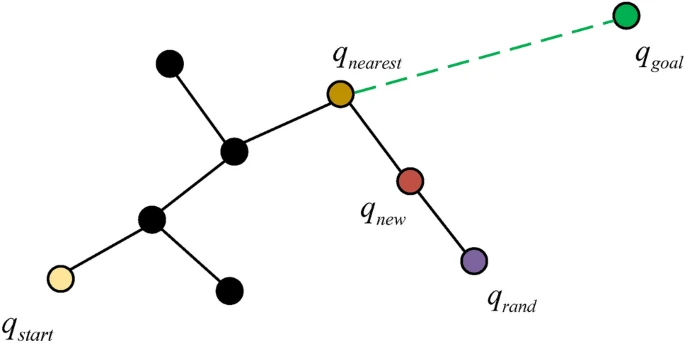 --- [algorithm](https://www.nature.com/articles/s41598-024-76299-9) for RRT, ```[1|5|6|7|8|9|11-13|14] input: q_start, q_goal, n output: T T.init (q_start); for i = 1 to n do q_rand <- Sample(i); q_nearest <- Nearest (q_rand, T); q_new <- Steer (q_nearest, q_rand); if CollisionFree()) then T.addVertex(q_new); T.addEdge(q_near, q_new, L); return T; ``` --- an [illustration of RRT](https://graham-clifford.com/rrt-algorithm/) trying to find a path to the red dot: 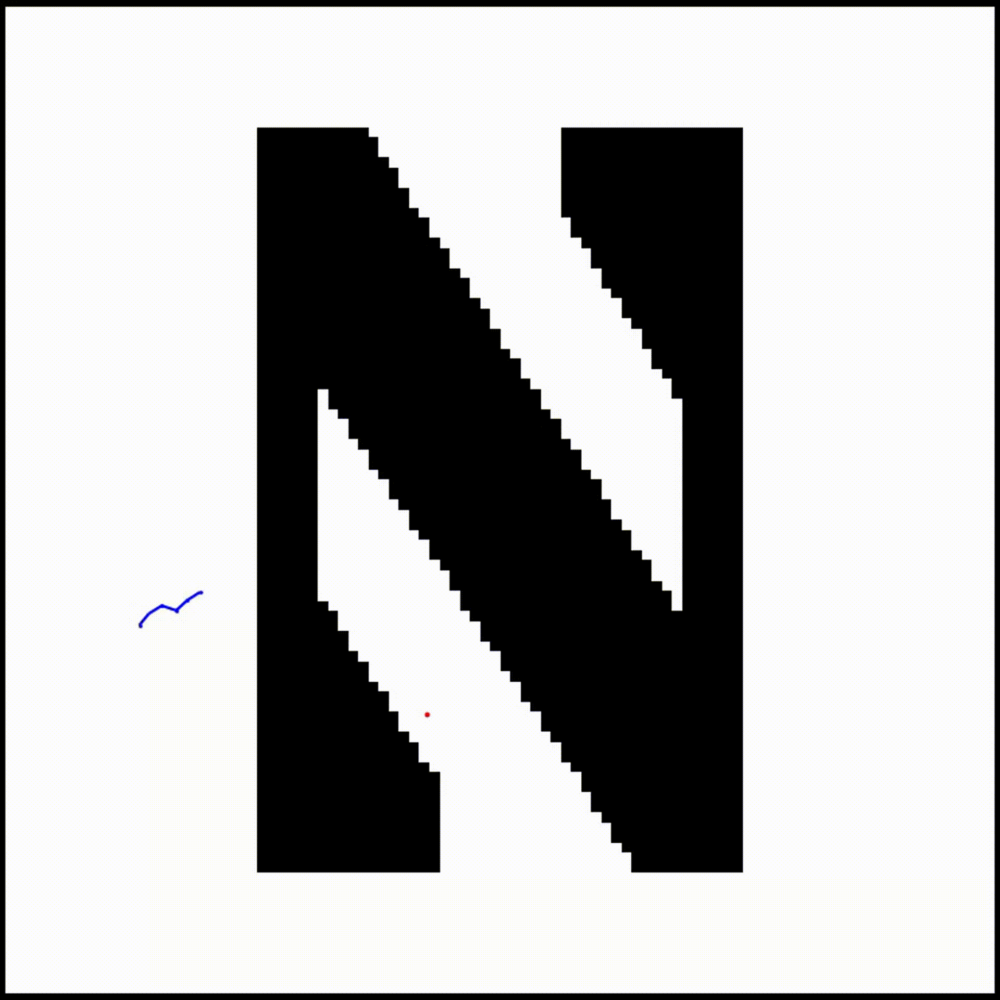 --- ### [**RRT\* Algorithm**](https://www.nature.com/articles/s41598-024-76299-9) --- ### [**RRT\* Algorithm**](https://www.nature.com/articles/s41598-024-76299-9) - improves existing paths through rewiring steps --- ### [**RRT\* Algorithm**](https://www.nature.com/articles/s41598-024-76299-9) - improves existing paths through rewiring steps - shortens path segments through optimization steps --- ### [**RRT\* Algorithm**](https://www.nature.com/articles/s41598-024-76299-9) - improves existing paths through rewiring steps - shortens path segments through optimization steps - takes node costs into account --- ### [**RRT\* Algorithm**](https://www.nature.com/articles/s41598-024-76299-9) - improves existing paths through rewiring steps - shortens path segments through optimization steps - takes node costs into account generate **high-quality** and more **optimized** paths --- **RRT vs RRT\*** --- **RRT vs RRT\*** RRT* has **better path quality*** --- **RRT vs RRT\*** RRT* has **better path quality*** find a better path while ensuring search efficiency Note: - RRT* **does not choose the nearest node** as the parent node of the new node, but in a **certain range** around the new node, chooses the node with the best path (the least cost) as the parent node of the new node. --- <!-- .slide: data-background="white" --> ### RRT* example 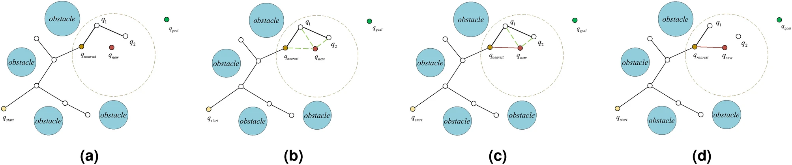 Note: the method is to **draw a circle** around $q_{nearest}$ and compare the distance between a point in the circle and $q_{new}$. If the distance between $q_{nearest}$ and $q_{new}$ is less than the distance between $q_{new}$ and $q_1$ or $q_2$, $q_{nearest}$ and $q_{new}$ are connected. Meanwhile, we need to compare the shortest distance between $q_{nearest}$ and $q_2$. If the distance between $q_{new}$ and $Q-2$ is shorter, we update the parent of $q_2$ to $q_{new}$. This step is called the **reconnect**. Compared with RRT, the RRT* algorithm has the advantage of re-selecting nearby nodes and reconnecting extended nodes of random trees, inheriting the Probabilistic completeness of the RRT algorithm and making the planned routes more optimized. --- [various improvements to RRT\*](https://www.nature.com/articles/s41598-024-76299-9) _e.g.,_ G-RRT*, GPF-RRT*, APF-RRT*, Improved A_RRT*, _etc._ --- <!-- .slide: data-background="white" --> ### comparisons of various implementations 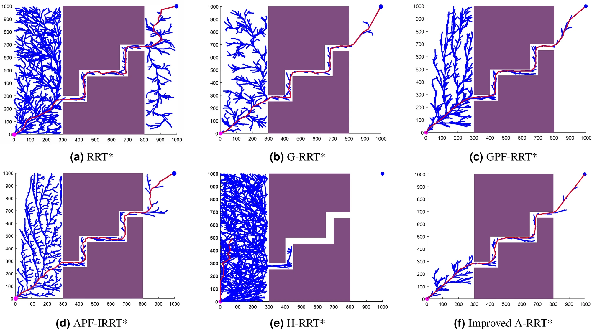 --- graphical representation algorithms (_e.g.,_ Voronoi diagrams) used **in conjunction with** the trajectory estimation algorithms (APF, RRT)